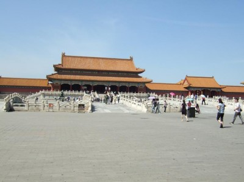
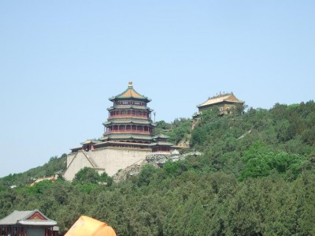
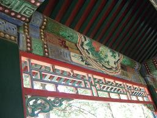
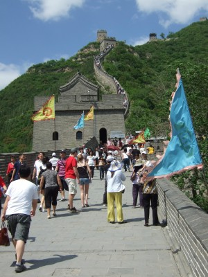

- 12 -

huyến đi tour Trung Quốc tập trung trước Nhà hát Lớn 5 giờ sáng, từ hotel Hàng Bạc chúng tôi lên taxi 4 giờ 40. Trời vẫn tối, phố xá vắng tanh, đèn đường tỏa ánh sáng vàng vàng, thỉnh thoảng xe máy, xe tải lao nhanh trên đường. Taxi chạy gần đến ngã tư Tràng Tiền, đèn giao thông bật đỏ, không ngờ xe tăng tốc, vọt qua. Tôi tái mặt, hai chân đạp cứng xuống sàn xe theo thói quen như phanh (thắng) gấp, quát:
-Sao cậu lại vượt đèn đỏ? Muốn chết cả lũ hả?
-Đường vắng mà!
Xe băng qua ngã tư, tôi nói:
-Cậu muốn tự tử, chuyện của cậu, còn chúng tôi thì không!
Cậu lái xe im, nhưng có vẻ không hài lòng. Bậy thật! Taxi chở khách dám vượt đèn đỏ! Nó coi thường mạng nó, okay, nhưng không được coi thường mạng khách trên xe chứ! Tức mình, tôi bảo:
-Tôi có bằng và lái xe ở Anh gần 30 năm, hơn tuổi đời của cậu. Tôi nói để cậu rõ, xe dừng trước đèn đỏ không phải sợ đèn đỏ mà tôn trọng luật giao thông, tôn trọng pháp luật nhà nước.
Xuống xe, tôi vẫn còn bực mình và chưa hết sợ. Chả trách tai nạn giao thông ở Việt Nam đứng hàng “top ten” trên thế giới.
Trước cửa Nhà hát Lớn đã có hai gia đình đợi sẵn, chúng tôi làm quen nhau, lát sau điện thoại di động của tôi rung chuông, người dẫn đoàn, Quốc Dũng, gọi. Chuyến đi của tôi có trục trặc, là Vịt Cừu, mỗi lần xuất cảnh tôi phải có giấy nhập cảnh của Cục Xuất Nhập Cảnh (35 Mỹ kim/lần), tour về 30 tháng 5, không hiểu sao, giấy nhập cảnh ghi 30 tháng 6, tức là vợ chồng tôi phải chờ ở sân bay Nội Bài một tháng mới được vào Việt Nam!
Hôm sáng thứ Bẩy, tôi đến Nam Long nhận giấy tờ, sơ ý không kiểm tra, về hotel xem lại mới tá hỏa. Nam Long đóng cửa buổi chiều, tour khởi hành Chủ nhật, không biết làm thế nào, đành gọi cho người dẫn tour. Anh hẹn gặp tôi, hứa sẽ báo cho Nam Long làm giấy nhập cảnh mới rồi fax cho anh. Nghe biết vậy, nhưng tôi vẫn lo, nhỡ có chuyện gì, biết tính sao.
Tour có 16 khách, toàn người cao tuổi, trẻ nhất cũng hơn 50, đúng 5.10 sáng, xe lên đường, qua Cầu Giấy, đón nhóm 8 người giáo viên gần trường Đại học Sư phạm đi Nội Bài. Kỳ này, anh Dũng phát cho chúng tôi chiếc mũ vải màu trắng in chữ Hồng Gai Tourist.
Theo lịch, máy bay cất cánh 9.10 sáng, làm thủ tục check-in xong từ lâu, bảng điện tử gate số 5 thông báo chuyến bay Hà Nội – Quảng Châu chậm, lý do thời tiết Trung Quốc xấu. Gần 12 giờ trưa, vẫn chưa có chuyến bay, hãng South China Airlines thông báo phát cơm cho khách. Mỗi người một suất cơm hộp, một chai nước suối hay lon Coca. Dù đói nhưng chỉ ăn được vài miếng, suất cơm tệ quá. Người ta bảo “Cơm Tàu, vợ Việt, nhà Tây” mà thế này ư? Chả trách khi nhận giấy tờ, cô nhân viên Nam Long bảo, hai bác nên mang theo ruốc thịt và nước mắm, món ăn Trung Quốc không hợp khẩu vị người mình. Tôi không tin, vả lại đi du lịch mà đem ruốc, nước mắm bỏ vào va-ly, kỳ thấy mồ! Nhưng mấy ai học hết chữ ngờ!
Cái gì đến cũng phải đến, gần 2 giờ chiều, máy bay cất cánh. Tôi lại ngồi hàng ghế cuối, sát toilet. Bữa cơm trên máy bay đúng phiên bản sao lại ở sân bay, chỉ có 2 lựa chọn, mỳ xào thịt bò và cơm thịt lợn hầm, nấu dở ẹc. Suất nào cũng có bánh bao không nhân to bằng quả chanh to. Hơn 30 năm, tôi đã quên món bánh bao nhân bột hay bánh bao nhân mọt, nay lại có trong khẩu phần ăn của hãng South China Airlines, nuốt sao nổi. Nhiều người cũng như tôi, nhấm nháp qua loa rồi bỏ, tôi hỏi lon beer, cô tiếp viên bảo, không có bia, rượu, chỉ có nước ngọt, trà và cà-phê. Thôi, đành uống cốc cà-phê lót dạ.
Sau gần 3 giờ bay, phi cơ giảm độ cao quá nhanh. Tự nhiên tôi choáng váng, mặt mũi tối sầm, buồn nôn, dấu hiệu như bị stroke nhẹ. Tôi lấy một viên thuốc chống say và hai viên aspirine loại 75 mg/viên, nuốt vội. Vài phút sau, ghế lắc mạnh, máy bay đã hạ xuống đường băng an toàn, sức khỏe của tôi không khá hơn. Mọi người bắt đầu lấy hành lý, chuẩn bị xuống, vợ tôi yêu cầu tiếp viên giúp đỡ. Hầu như các tiếp viên không biết Anh ngữ, người nọ nhìn người kia, nói với nhau bằng tiếng Quan Thoại, may quá một cô có tuổi đi đến, chắc là trưởng nhóm, vợ tôi nói tiếng Anh, bảo, “chồng tôi bị đột quỵ, xin giúp đỡ”. Cô ta trả lời không có y tá hay bác sĩ nên không thể giúp được. Tôi đành bám vai bác Thành, người cùng đoàn ngồi kế bên, cố lê bước xuống máy bay.
Tôi bắt đầu nôn, mặt mày sa sẩm, hoa mắt, chân tay lạnh toát, vã mồ hôi, nhưng vẫn tỉnh. Cậu Dũng mải lo cho đoàn làm thủ tục nhập cảnh, bỏ quên chúng tôi. Bác Thành dìu ra sảnh đường, tôi nằm vật xuống ghế, tay cầm túi nôn, choáng váng. Vợ tôi chạy ngược chạy xuôi hỏi nhân viên sân bay tìm xe lăn. Thế là tôi thành tàn phế thứ thiệt, một bà trong đoàn giúi vào tay vợ tôi lọ dầu gió. Sau khi xoa vào thái dương, vào chân tay, ấy thế mà chỉ sau 15 phút, tôi đỡ hẳn. Chúng tôi chuyển máy bay đi Bắc Kinh.
Từ sân bay quốc tế chuyển sang sân bay nội địa khá xa, lại thủ tục kiểm tra hành lý, tôi vẫn ngồi xe lăn do nhà tôi đẩy đến tận hành lang cửa máy bay.
Tại sao đang khỏe mạnh, tôi bị đột quỵ? Theo tôi, bụng đói từ sáng, hai bữa cơm của South China Airlines không nuốt được là bao, đường huyết giảm, cộng thêm phi công cho hạ cánh quá nhanh, ghế ngồi phía đuôi lắc mạnh, tuổi lại cao, mỗi thứ gộp lại một chút, thế là kềnh!
Tôi đi máy bay nhiều, nhưng chưa bao giờ máy bay hạ độ cao xuống nhanh như thế. Hãng Vietnam Airlines bay đường dài, cơ trưởng là người nước ngoài (Úc, Ba lan, Pháp…) chứ không phải người Việt, còn South China Airlines cơ trưởng người Trung Quốc. Phải chăng tay nghề chưa đạt trình độ quốc tế nên hạ độ cao quá nhanh như vậy?
Rất may, chuyến bay Quảng Châu – Bắc Kinh tôi không sao, rút bài học “suýt toi mạng”, cố nhét suất cơm hộp cho chắc dạ và uống 2 ly nước cam. Đến sân bay Bắc Kinh đã gần 7 giờ tối, ấy thế mà hành lý của ba người, cậu Dũng, bác Thành và tôi lại thất lạc. Hỏi đâu cũng không ai biết, tìm lên tìm xuống, loạn cả nhà ga, hơn một giờ vẫn không thấy. Chúng tôi bắt đầu nản, đột nhiên vô tình tôi nhìn thấy trên xe đẩy ở ngay phía ngoài hành lang lối ra cửa, có hành lý của chúng tôi. Thế có lạ không? Chúng tôi chờ ở băng dây chuyền chuyển hành lý từ lúc chưa chạy. Sao nó lại nằm tô hô ngay lối đi của tầng khác? Nếu mất đồ, bác Thành lo nhất, tất cả đồ đạc, quần áo… đều trong va-ly, chỉ có bộ quần áo trên người! Còn tôi mất cũng không sao, một túi du lịch đựng lặt vặt, hơn nữa chúng tôi mua bảo hiểm từ London, có chỗ khiếu kiện.
Nhận được hành lý, chúng tôi vẫn tức, vì lối làm ăn tắc trách của nhân viên sân bay Bắc Kinh. Thế mới biết, cán bộ nhân viên nước cộng sản nào cũng giống nhau, toàn lũ vô trách nhiệm!
Gần 9 giờ đêm, mới ra khỏi phi trường, anh Hùng, hướng dẫn đoàn ở Bắc Kinh đưa chúng tôi vào nhà hàng. Ăn xong về khách sạn đã 11 giờ đêm.
Bắc Kinh
Mang dòng máu Minh Hương, lần này là lần thứ hai tôi về thăm “tổ quốc”. Lần thứ nhất, cuối tháng 6-1979 làm thân tỵ nạn, cùng vợ và đàn con bơ vơ, vật vạ bên bờ biển Bắc Hải chờ sửa thuyền, tôi chỉ có tổ cò, làm gì có tổ quốc mà thăm mới viếng! Lần này, trong vai du khách người Việt, thăm quan danh lam thắng cảnh nước xã hội chủ nghĩa Trung Hoa anh em!
Trung Hoa đất rộng người đông, diện tích 9,6 triệu ki-lô-mét vuông, dân số 1 tỷ 300 triệu người, với 18 ngàn cây số bờ biển. Từ xa xưa, Trung Quốc đã được mệnh danh là một trong bốn cái nôi của nền văn minh thế giới.
Tại sao một nước mà người ta gọi hai tên, Trung Hoa và Trung Quốc? Theo như giải thích của cậu Lâm Đức Nam, hướng dẫn viên Thượng Hải, như sau:
“Nền văn minh Trung Hoa vốn được gọi là nền văn minh Hoa Hạ, theo Tả truyện: ‘hữu lễ nghĩa chi đại, cố xưng Hạ, hữu phục chương chi mỹ, vị chi Hoa.’ (Có lễ nghĩa lớn nên gọi là Hạ, có trang phục đẹp nên gọi là Hoa); Như vậy, tên Trung Hoa vốn có từ lâu, ngay từ những ngày dân tộc Hán bắt đầu lập quốc ở lưu vực sông Hoàng Hà. Còn chữ Trung, có nghĩa vùng đệm giữa các vùng đất khác; Chữ Hoa, chỉ nơi có văn hóa. Cái tên Trung Hoa nghĩa là như vậy. Năm 1911, cách mạng Tân Hợi đã lật đổ nhà Mãn Thanh, thành lập nhà nước Trung Hoa Dân quốc, gọi tắt Trung Quốc.”
Bắc Kinh là một trong bảy cố đô của Trung Quốc, diện tích 16 ngàn cây số vuông, dân số 9 triệu người, với 3 ngàn năm bề dày lịch sử, đã có 4 triều đại đóng đô tại đây bắt đầu từ nhà Kim, sau đó đến Nguyên, Minh, Thanh. Chương trình du lịch ở 4 ngày 3 đêm ở Bắc Kinh, thăm quan:
- Cố cung hay còn gọi Tử Cấm thành
- Di Hòa viên
- Vạn lý Trường thành
- Nơi sản xuất lam ngọc và bích ngọc; Siêu thị và chợ trời.
1. Tử Cấm thành/Cố Cung Bắc Kinh

Tử Cấm thành
Đây là cung điện của hai triều đại nhà Minh (từ 1368 – 1644) và nhà Thanh (1644-1911). Thời kỳ đầu, nhà Minh đóng đô ở Nam Kinh, đến đời vua Thành Tổ Chu Khang mới rời đô về Bắc Kinh, năm 1403 (1406?) bắt đầu khởi công xây Tử Cấm thành, hoàn tất năm 1424.
Năm 1644, quân Mãn Thanh lật đổ triều đại nhà Minh, Tử Cấm thành bị cướp bóc, nhiều nơi bị phá hỏng. Sau khi lên ngôi, nhà Thanh xây lại Tử Cấm thành, đưa nó trở lại thời kỳ huy hoàng. Không chỉ vậy, họ còn xây thêm đền miếu, điện đường, hồ và đình viên, tạo thêm cảnh sắc mê hồn. Đến cuối thế kỷ 18, sự huy hoàng của Tử Cấm thành đã đạt đến tuyệt đỉnh.
Tử Cấm thành có nghĩa là thành cấm màu tím. Theo nghĩa Hán tự, chữ Tử còn có nghĩa là màu tím, lấy ý theo thần thoại: Tử Vi viên ở trên trời, nơi ở của Trời, Vua là con Trời nên nơi ở của Vua cũng gọi là Tử, Cấm thành là khu thành cấm dân thường ra vào.
Diện tích Tử Cấm thành 720 ngàn mét vuông, có 800 cung với 9995 phòng, bốn góc thành có bốn tháp canh cao. Tử Cấm thành hình chữ nhật, bốn bên đều có cửa (môn). Cửa chính Nam: Ngọ môn; Cửa Đông: Đông Hoa môn; Cửa Tây: Tây Hoa môn; Cửa Bắc: Thần Vũ môn. Xung quanh thành, tường cao 3 mét, có con sông đào Hộ Thành rộng 52 mét bao quanh.
Tử Cấm thành chia làm hai phần: Ngoại triều và Nội triều.
Ngoại triều: Nơi nhà vua giải quyết công việc triều chính, cử hành các lễ nghi. Có các điện lớn xếp thành một hàng dọc nhìn từ phía ngoài vào gồm Thái Hoà điện, Trung Hòa điện, Báo Hòa điện, đây chính là trục chính nằm trong Hoàng Cung, hai bên xây các điện đối xứng giống nhau. Điện phía Đông: Văn Hoa điện, Điện phía Tây: Võ Hoa điện
Nội đình tính từ cửa Thanh Càn Mông, gồm 3 cung: Càn Thanh cung, Giao Thái điện, Thân Ninh cung, cuối cùng là Ngự Hoa viên.
Phía đông Hậu Tam cung gồm: Chay cung, Dục Khánh cung, Phụng Tiên điện, Đông Lạc cung
Phía cận đông là Hoàng Cục điện, Ninh Thọ cung, Dưỡng Sinh điện, Lạc Thọ đường, Di Hòa viên.
Phía tây Hậu Tam cung gồm: Dưỡng Tâm điện, Tây Lục cung.
Cận tây có Tứ Ninh cung, Thọ An cung.
Nội đình là nơi sống và làm việc của nhà vua, cũng là nơi ở của Thái hậu, Thái phi, con cháu dòng họ nhà vua và các cung tần mỹ nữ.
Toàn bộ Tử Cấm thành được xây bằng gạch màu đỏ, ngói màu vàng. Bậc thềm và lan can lát đá bạch ngọc chạm trổ rồng phượng và các động vật khác.
Các cung điện xây bằng các loại gỗ quý hiếm, các hoành phi câu đối và các cột được chạm trổ tinh vi, sơn son thiếp vàng nguy ngha lộng lẫy.
Cố cung là một kiến trúc cổ kính đại diện cho lối kiến trúc phương Đông rất độc đáo.
Đi thăm Tử Cấm thành, xe đưa chúng tôi đến cửa Bắc, Thần Vũ môn, người đông như chảy hội, vất vả lắm xe mới tìm được chỗ đỗ, anh Hùng, hướng dẫn viên, trước khi xuống xe, bảo: “Các bác, các cô các chú, nếu ai không đủ sức đi bộ 4, 5 cây số, xin ở trên xe. Chúng ta vào thăm Tử Cấm thành từ Thần Vũ môn, xe sẽ đón ở cửa Ngọ môn, ai muốn về xe cũng không thể quay lại chỗ này được, bác nào yếu xin ngồi trên xe.”
Du lịch Bắc Kinh phải tham quan Tử Cấm thành chứ, ai lại bỏ. Tất cả chúng tôi xuống xe, mang theo chai nước suối, đội mũ, cầm ô. Trời nắng gắt, nhiệt độ 35, 36 độ C nhưng đặc biệt không oi ả, không đổ mồ hôi, người nhây nhớp khó chịu như ở Việt Nam, Singapore hay Mã Lai. Chúng tôi theo anh Hùng, đi đến đâu anh giới thiệu sơ qua về lịch sử của từng cung, lâu đài đến đó. Chỉ lướt qua, ấy thế đến cửa Ngọ môn cũng mất hơn hai giờ đồng hồ.
Cửa Ngọ môn chính là Quảng trường Thiên An Môn, nơi đây 21 năm trước (1989) có cuộc biểu tình của hàng triệu sinh viên đòi tự do, dân chủ, Đặng Tiểu Bình và Lý Bằng đã ra tay đàn áp đẫm máu. Đứng trước cửa Ngọ môn, tôi không khỏi bồi hồi, tự hỏi, không biết chỗ tôi đứng có máu của các sinh viên Trung Quốc đổ xuống năm 1989 hay không.
Nắng vẫn gay gắt tuy đã gần 4 giờ chiều, đường trở về khách sạn còn xa, vì thế chúng tôi bỏ tham quan Quốc vụ Viện (Nhà Quốc hội) theo như chương trình của tour.
2. Di Hòa viên
Ngày hôm sau đi thăm Di Hòa viên, du khách khắp nơi đổ về đông nghịt, xe đỗ rất xa, chúng tôi đi bộ khá lâu mới tới. Đi đến đâu, anh Hùng giới thiệu lịch sử và giai thoại của từng di tích đến đó. Anh nói:
-Vua Càn Long năm thứ 15 đã cho xây dựng Di Hòa viên, khởi công năm 1750 để mừng sinh nhật thứ 60 của mẹ, sau này cũng là nơi làm lễ mừng thọ Từ Hy Thái hậu và cũng chính nơi đây, Từ Hy Thái hậu đã giam lỏng vua Quang Tự.
Di Hoà viên có 2 phần: núi Vạn Thọ và hồ Côn Minh.
Vạn Thọ Sơn xưa kia gọi là Ung Sơn. Ung có nghĩa Chum Đá, sau khi vua Càn Long mở rộng hồ lấy đất đắp cao, đưa đá khắp nơi tạo thành núi nhân tạo đổi tên Vạn Thọ Sơn. Phía nam của núi xây các lâu đài Kim Điện theo trục đối xứng từ dưới lên, bao gồm: Bái Vân môn, Kim Thúy kiều, Bái Vận môn, Đức Huy điện, Phật Hương các, Chung Hương giới.

Phật Hương các
Nhưng nổi bật, Phật Hương các là lầu to nhất trong Vạn Thọ Sơn. Trên núi trồng rất nhiều loài hoa thơm cỏ lạ, hương thơm ngào ngạt, rất nhiều con đường nhỏ xây dựng muôn hình vạn trạng, du khách tưởng như lạc lối trong chốn bồng lai tiên cảnh. Phía bắc núi là Vườn Đào Vạn Thọ.
Hồ Côn Minh xưa kia mang tên Ung Sơn Bạc, vua Càn Long cho xây theo khuôn mẫu Tây Hồ và mở rộng. Hồ rộng 220 héc-ta, chiếm ¾ diện tích Di Hòa viên, nước hồ trong xanh ôm núi Vạn Thọ, các cung điện lung linh soi bóng xuống mặt hồ.

Những bức họa trên hành lang Vạn Thọ Sơn và hồ Côn Minh
Giữa núi và hồ, một hành lang có mái che chạy dài 728 mét với 273 gian nối liền nhau, trong hành lang là 8000 bức tranh sơn thủy dựa theo các tác phẩm văn học cổ Trung Hoa phác họa cảnh và nhân vật trong truyện Tam Quốc, Tây Du ký, Hồng lâu mộng… của các họa sĩ Trung Quốc lừng danh.
3. Vạn lý Trường thành
“Bất đáo Trường Thành phi hảo hán.” (đến Trung Quốc mà chưa đến Trường thành chưa phải là hảo hán)
Từ Bắc Kinh, xe chạy gần 40 km đến một điểm tham quan của Vạn lý Trường thành. Xe vừa chạy anh Hùng vừa giới thiệu:
-Vạn lý Trường thành dài hơn 5000 cây số, chạy từ đông sang tây, nối liền 6 tỉnh từ Sơn Hải Quan đến phía bắc tỉnh Cam Túc. Trước Tần Thủy Hoàng, các nước cũng đã xây thành chống giặc phương Bắc. Sau khi Tần Thủy Hoàng thống nhất Trung Hoa, cho xây nối liền tường thành các nước lại tạo thành Vạn lý Trường thành chống giặc phương Bắc. Thành cao 6 mét, rộng 4 mét, bắt đầu từ Chiêu Đông kéo đến tận cực Tây tỉnh Lâm Thao. Trường thành chia làm ba đoạn chính.
Đoạn đầu, từ phía Đông, khởi điểm là Sơn Hải Quan, sát bờ Hoàng Hải, cách tỉnh Chiêu Đông chừng 3 dặm, chạy tới Hoàng Hà, băng qua núi. Đoạn này xây bằng đá và gạch.
Đoạn thứ hai là những chiến lũy đắp bằng cây, gỗ và hoàng thổ. Xuất phát từ nhánh sông phía đông Hoàng Hà chạy tới giao điểm Hoàng Hà và Lưỡng Châu.
Đoạn thứ ba chạy từ Lưỡng Châu qua các dãy núi trùng điệp ở Kla Yu Kuan (Địa Vũ Quan?). Khu này có Ngọc Môn quan, cửa ngõ của lam ngọc Ba Tư và ngọc thạch Miến Điện du nhập vào Trung Quốc.

Một góc Vạn lý Trường thành
Theo sử gia Tư Mã Thiên, tướng Mông Điền đã hoàn tất Trường thành vào năm 214 trước Công nguyên, sau hơn 7 năm xây cất và nối những đoạn thành đã làm từ nhiều đời trước, trở thành Vạn lý Trường thành, ông sử dụng 300 ngàn tù binh, tội phạm, dân địa phương làm lao công xây dựng, có tài liệu ghi, số lao công lên đến hơn triệu người.
Trường thành có 2500 tháp canh, khoảng cách hai tháp canh bằng chiều dài 2 tên bắn. Vì vậy, trên mặt thành chỗ nào cũng nằm trong tầm bắn của mũi tên, không có chỗ nào an toàn cho giặc leo lên thành. Ngoài ra, tháp canh còn xây vươn ra ngoài một khoảng, lính canh có thể bắn được kẻ địch dưới chân thành, không cần nhoài người ra khỏi tháp.
Cứ vài tháp canh có trại đồn trú cho lính phòng thủ. Ngoài ra, có khoảng chừng 1500 tháp báo hiệu, xây tách khỏi Trường thành. Trên từng đỉnh tháp, có củi, gỗ, bùi nhùi xếp sẵn, khi cần, sẵn sàng đốt lửa hay hun khói. Những trạm khói này xây ở những nơi hiểm yếu, quan trọng, như đỉnh đồi, thung lũng, cửa sông, sườn núi, khe núi… Khi có giặc, lính thám báo trên tháp, ban ngày họ hun khói, ban đêm đốt lửa, báo động cho lính canh trên Trường thành.
Chúng tôi đến một tháp canh của Trường thành, hàng trăm xe bus du lịch đỗ sát nhau, du khách đủ màu da, tiếng nói dân tộc trên trái đất đổ về đây chiêm ngưỡng kỳ quan của thế giới. Tôi leo gần hết 2 tháp canh, dừng lại ngắm phong cảnh, lấy camcorder ra ghi kỷ niệm. Núi rừng trùng trùng điệp điệp và trường thành cũng điệp điệp trùng ngoằn ngoèo theo dãy núi. Người ở đâu đổ về đông thế, không tháp canh nào là không có người chiêm ngưỡng. Gần 3 tiếng đồng hồ chiêm ngưỡng Vạn Lý Trường Thành, đoàn chúng tôi về khách sạn nghỉ ngơi chuẩn bị cho ngày mai thăm quan theo kế hoạch.
Hôm sau, xe đưa chúng tôi đến cơ sở mỹ nghệ chuyên sản xuất lam ngọc, bích ngọc, hồng ngọc… chương trình tour bao giờ cũng có mục đưa du khách đi tham quan cơ sở sản xuất và bán các mặt hàng lưu niệm. Đó là mối làm ăn của công ty du lịch nói chung. Giá không hề rẻ, nếu như không nói giá trên trời, còn ngọc thì được quảng cáo là có tác dụng chữa bệnh, chống gió độc, bảo vệ sức khỏe. Thật hư chả ai dám khẳng định. Đoàn tôi toàn người có tuổi, kinh nghiệm đầy mình và túi cũng “lép” cho nên mua bán rất thận trọng, khác đoàn đến trước mua rất nhiều vì toàn lứa tuổi trung niên.
Ba ngày ở Bắc Kinh thật ngắn ngủi, tuy là du khách “ngồi xe bus du lịch, lướt xem phong cảnh”, mọi thứ chỉ biết sơ sơ, nhưng cũng thật thú vị.
Khách sạn 3 sao, nhưng sạch sẽ, rộng rãi, có computer nối mạng miễn phí, bữa điểm tâm buffet nhiều lựa chọn, đặc biệt có 4 loại bánh bao nhân khác nhau trong đó có bánh bao nhân bột!
Bữa ăn nhà hàng thường 8 món, hai chai bia Thanh Đạo (Tsing Tao) loại 750 ml, hai chai Coca, chúng tôi được thưởng thức vịt quay Bắc Kinh, ngắm tận mắt tài cắt lọc vịt quay của bồi bàn nhà hàng “biểu diễn tại bàn, phong cách Bắc Kinh”. Nói chung, rất thú vị và đáng đồng tiền bát gạo.
Đêm ngày thứ 3 chúng tôi lên tầu hỏa đi Thượng Hải.
Có lẽ lâu lắm, kể từ khi làm người viễn xứ, sau hơn 31 năm, đêm ấy tôi mới được chứng kiến và hòa nhập làm người khách đi tầu như thời kỳ bao cấp ở Việt Nam. Nhà ga Bắc Kinh đông như kiến, ồn ào như chợ vỡ, hành khách địa phương tay xách nách mang, va-ly, túi xách từ khắp nơi đổ về, đồ đạc họ để ngổn ngang chắn giữa lối đi. Kẻ ngồi, người nằm, từng nhóm túm tụm bàn tán, ồn ào, chật chội, không khí trộn đủ thứ mùi, xông lên nồng nặc, xộc vào mũi khó chịu. Nhà ga như quá tải, mãi sau vợ chồng tôi mới kiếm được chiếc ghế ngồi cho đỡ mỏi. Tầu Bắc Kinh – Thượng Hải chạy 12 tiếng, ngày mai khoảng 12 giờ trưa mới đến Thượng Hải, anh Hùng phát mỗi người một gói (bát) mỳ ăn liền, tiêu chuẩn bữa điểm tâm sáng mai.
Mười giờ đêm, cửa số 8 mở, đón khách đi Thượng Hải. Cuộc chen lấn xô đẩy bắt đầu. Người, hành lý, hàng hóa, chật cứng lối đi, người nọ chen lấn người kia, gọi nhau í ới, nhích từng bước, chẳng có hàng lối, mạnh ai chen lấy được. Anh Hùng, anh Dũng cũng chen cật lực để lên trước, chiếm chỗ đứng sát cửa soát vé, theo dõi chúng tôi.
Vất vả lắm, cuối cùng vợ chồng tôi cũng lọt qua cửa, mồ hôi ướt đầm lưng áo. Thôi thế là may, chúng tôi lên tầu. Sáu người một buồng giường mềm, 4 vị tranh nhau giường tầng 1, tầng 2, vợ chồng tôi cao tuổi nhất, leo tầng 3. Thôi, cao thấp có là gì, miễn có chỗ ngả lưng! Một đêm thôi, tranh nhau còn ra thể thống gì nữa. Thu xếp xong, tôi ngả lưng, ngủ thiếp.
Chuyến tầu tốc hành Bắc Kinh - Thượng Hải băng băng trên đường dài 1650 km, tiếng xình xình theo nhịp rung lắc của toa đều đều làm tôi chập chờn nửa ngủ nửa thức. Nhìn đồng hồ tay, 4 giờ 10, lồm cồm bò dậy, leo xuống tầng 3, tôi ra ngoài hành lang, hít thở khí trời, ngắm phong cảnh hai bên đường qua cửa kính.
Trời chưa sáng, tầu vẫn lao nhanh, hàng cây, đồng ruộng lùi về phía sau loang loáng trong ánh sáng yếu ớt hắt ra từ con tầu. Nếu so sánh với Việt Nam, nhìn chung giống nhau, chỉ có điều khác là cửa sổ toa tầu Việt Nam ngoài kính còn có lưới sắt bảo vệ, tránh “cháu ngoan Bác Hồ” ngứa tay ném đá lên đoàn tầu, chào mừng du khách!
Xếp hàng trước cửa nhà vệ sinh, một phụ nữ Châu Âu có tuổi từ trong đi ra, bà lắc đầu, lẩm bẩm, tôi chỉ nghe thấy, “hole, hole”, không ngờ bà Trung Quốc đứng trước tôi, cười, nói: “Hảo, hảo lớ”!
Chả là, buồng vệ sinh mất vệ sinh này thải uế khí trực tiếp xuống đường ray, làm du khách Châu Âu ngạc nhiên. Trên thế giới, có lẽ vài nước còn hệ thống vệ sinh mất vệ sinh như ở Trung Quốc và Việt Nam, người có bệnh sẽ truyền mầm bệnh qua hệ thống đường xe lửa, rải đi khắp đất nước.
Rửa mặt, đánh răng qua loa, tôi về phòng, ngồi ở hàng hiên ngắm bình minh lên. Mùa hè ở Trung Quốc, 5 giờ trời đã sáng, phương Đông ửng hồng, những tia nắng đầu tiên rọi vào khung cửa kính. Phía bên trái, đường sắt cao tốc Bắc Kinh-Thượng Hải đã hoàn thành, người ta bảo, Quốc khánh 01-10 năm nay sẽ cắt băng khai thông tuyến đường mới.
Hơn 11 giờ trưa, tầu vào ga Thượng Hải, xuống sân ga đã thấy Vương Đức Nam, hướng dẫn viên ở Thượng Hải, tươi cười chào đón.
Thượng Hải
Chiếc xe bus du lịch bon bon trên xa lộ đưa chúng tôi vào nhà hàng dùng bữa trước khi về khách sạn. Tay cầm micro, Nam tươi cười, dí dỏm giới thiệu Thượng Hải, nơi đất chật người đông. Tốt nghiệp cử nhân Văn-Sử ở Thượng Hải, sang Việt Nam học 3 năm, làm hướng dẫn viên du lịch hơn 2 năm, tiếng Việt của anh rất khá:
-Thượng Hải có nghĩa là thành phố trên biển, thượng là trên, hải là biển, phát triển từ thời nhà Tống (960-1279), từ huyện Tùng Giang, phủ Tô Châu, nay trở thành một thương cảng sầm uất, với diện tích 6340 km vuông, dân số trên dưới 19 triệu người, riêng nội thành hơn 9 triệu, GDP 114 tỷ Mỹ kim (2005), là trung tâm tài chính, thương mại lớn nhất của Trung Quốc.
Thượng Hải chia thành hai khu, khu Tây và khu Đông, khu phía Tây bất động sản vô cùng, vì thế người ta mới có câu ‘Đến Thượng Hải mới biết mình nghèo. Đến Tô Châu mới biết vợ mình xấu’. Các chàng trai Thượng Hải muốn lấy được vợ, phải 3 có: Có nhà, có việc và có xe ô-tô.”
Hóm hỉnh, Nam bảo:
-Nam nữ thanh niên Trung Quốc truyền tai nhau câu thành ngữ, “lấy chồng Thượng Hải, lấy vợ Tô Châu”. Tại sao vậy? Cháu xin giải thích, con gái Tô Châu đẹp người đẹp nết, biết bao mỹ nữ Trung Hoa đều sinh ra từ đất Tô-Hàng nổi tiếng từ ngàn xưa. Còn trai Thượng Hải được mệnh danh, 5 con: “Dậy sớm như con gà, làm như con trâu, hiền như con cừu, trung thành như con chó, ăn như con lợn!” Các cô gái yêu trai Thượng Hải và chọn làm chồng là như vậy. Anh Lâm Đức Nam kể giai thoại về con gái Tô Châu như sau:
“Gia đình nào sinh con gái đều trồng cây long não phía trước của nhà, như vậy khách qua đường nhìn cây long não sẽ đoán được tuổi người con gái. Khi đến tuần cặp kê, người ta sẽ mang sính lễ đến dạm hỏi. Khi cô gái kết hôn, gia đình chặt cây long não coi thông báo với thiên hạ con tôi đã lấy chồng.
Ngồi hàng ghế dưới, tôi hỏi vọng lên:
-Vợ anh Nam người Tô Châu chứ?
Cười hiền lành, anh đáp:
-Dạ, không may mắn ạ, lấy vợ rồi cháu mới biết thành ngữ này.
Xe đi qua khu nhà cao tầng, Nam cười, chỉ tay lên chung cư:
-Các bác thấy đấy, trên các cửa sổ chung cư nhà ai cũng treo “cờ Liên hợp quốc.”
Nhìn theo tay anh chỉ, tất cả các ô cửa tầng chung cư đều có những cây sào dài thò ra bên ngoài phơi quần áo, đủ màu sắc, dài ngắn, to nhỏ, phần phật trước gió, rất phản cảm.
Nếu sự nổi trội của Bắc Kinh ở vẻ cổ kính thì Thượng Hải lại phô trương tầm vóc hiện đại với những dãy nhà cao tầng mọc như nấm, một trung tâm thương mại, tài chính, ngân hàng, công nghiệp, thương cảng sầm uất bậc nhất Trung Quốc.
Những ngày ở Thượng Hải chúng tôi đi thăm sông Hoàng Phố, bến Thượng Hải, tháp truyền hình Minh Châu, Dự Viên.
|
|
|
Sông Hoàng Phố và tháp truyền hình Minh Châu cao 469 mét |
|
|

Tháp truyền hình Minh Châu không chỉ làm nhiệm vụ thu phát sóng mà còn là trung tâm thương mại, cảnh quan cho khách du lịch. Tháp đứng thứ 3 trên thế giới, sau tháp Toronto và tháp Moscow về độ cao.
Người Thượng Hải tự hào, vì “Ai đến Thượng Hải, không viếng thăm tháp Minh Châu, không đi du thuyền trên sông Hoàng Phố khác nào đến Paris không đi thuyền trên sông Seine, không viếng thăm tháp Eiffel.”
Bờ Đông của sông Hoàng Phố sừng sững những ngôi nhà trọc trời, thể hiện sự trỗi dậy của nền kinh tế thị trường, sự khát vọng của nhân dân Trung Quốc từ những năm 1980, sau khi Đặng Tiểu Bình lên nắm chính quyền.
Giữa trung tâm thành phố náo nhiệt, lọt giữa hai phố lớn Renmin Lu (Đường Nhân Dân) và Zhonghua Lu (Đường Chuông Hoa) có một khu vườn đậm chất thơ. Đó là Dự Viên, còn được gọi Phố cổ Thượng Hải, điểm thu hút khách du lịch, nằm gọn trong vài con phố cổ quanh co, xây dựng từ năm 1555.
Bao bọc khu Dự Viên là những hàng cây xanh mát, phía trong một không gian mở, kết hợp hài hòa giữa vườn cây, suối nước, ao sen, đá tảng và những ngôi nhà cổ mang đậm nét văn hoá truyền thống Thượng Hải.
|
|
|
Một góc Dự Viên, phố cổ Thượng Hải |

Tô Châu - Hàng Châu
Trung Quốc có câu: “Ăn Quảng Châu, mặc Hàng Châu, ở Tô Châu”, sau hai ngày ở Thượng Hải, Nam đưa chúng tôi đi Tô Châu và Hàng Châu.
Trương Kế - Phong Kiều dạ bạc
Nguyệt lạc ô đề sương mãn thiên
Giang phong ngư hỏa đối sầu miên
Cô Tô thành ngoại Hàn San tự
Dạ bán chung thanh đáo khách thuyền.
Bản dịch của Tản Đà - Đỗ thuyền trên bến Phong Kiều
Quạ kêu, trăng lặn, sương rơi,
Lửa chài, cây bãi, đối người nằm co
Con thuyền đậu bến Cô Tô
Nửa đêm nghe tiếng chuông chùa Hàn San
|
|
|
Bến Phong Kiều, nổi tiếng ở Tô Châu |

Hàng Châu, nơi Đông Pha cư sĩ cư ngụ, có sông Tiền Đường nơi Vương Thúy Kiều trẫm mình, có anh hùng Nhạc Phi và Hán gian Tần Cối với giai thoại bánh quẩy. Chuyện bánh quẩy, tóm tắt như sau:
“Thời nhà Tống, tể tướng Tần Cối làm Hán gian cho nhà Kim (bán đảo Triều Tiên ngày nay - LHM), ghen ghét tài đức Nhạc Phi, tâu lên vua Tống Cao Tông: ‘Bách tính trong thiên hạ chỉ biết có Nhạc Phi không biết có Hoàng đế’ để ám hại vị tướng văn võ song toàn được dân chúng kính yêu. Nghe lời sàm tấu, Tống Cao Tông ra lệnh chém đầu cha con Nhạc Phi, Nhạc Vân.
Nhân dân Hàng Châu rất căm phẫn, thời ấy có người bán bánh bao rong, một ngày ế khách, ông lấy bột nặn hình vợ chồng Tần Cối, bỏ vào chảo dầu sôi hành hình cho bõ ghét. Dân chúng thấy lạ, mua thử, ăn thấy ngon, từ đấy người bán bánh bao chỉ bán món bánh rán hình vợ chồng Tần Cối.
Nghe tin,Tần Cối cho lính bắt nhưng họ trốn thoát. Ở nơi mới, ngày ngày họ vẫn bán bánh kiếm sống, nhưng không nặn hình người mà thay bằng 2 thỏi bột vê tròn, quấn vào nhau giả hình vợ chồng Tần Cối, chiên trong chảo dầu, đặt tên ‘Du gia quảy’ (Quỷ chiên trong dầu). Bánh này du nhập sang Việt Nam, thành tên ‘Dầu cháo quẩy’, ngày nay người Việt gọi tắt là “bánh quẩy”.
Đến đời Tống Minh Công, cha con Nhạc Phi được minh oan, hài cốt đem về và lập đền thờ ở Hàng Châu. Người ta đúc 2 pho tượng sắt vợ chồng Tần Cối quỳ trong cũi sắt trước mộ Nhạc Phi.
Ngày nay “du gia quẩy” bằng bột chiên trong dầu, từng cặp dính nhau, tượng trưng vợ chồng Tần Cối bị trói, ném vào vạc dầu hành tội, có bán trong các nhà hàng ở Trung Quốc và Việt Nam như ta thường thấy.”
|
|
|
Tượng Tần Cối và Vương thị quỳ trong cũi sắt trước mộ Nhạc Phi |

Du khách đến nơi đây còn được trải nghiệm cuộc sống đời thường của người dân thời Tống trong khu Tống Thành, một trong những thời kỳ hoàng kim nhất của lịch sử phong kiến Trung Hoa.